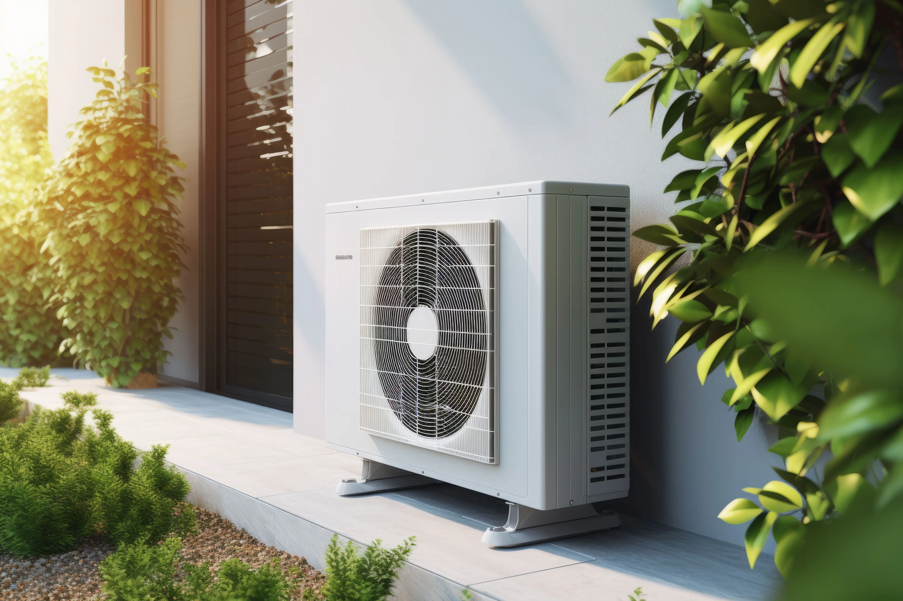
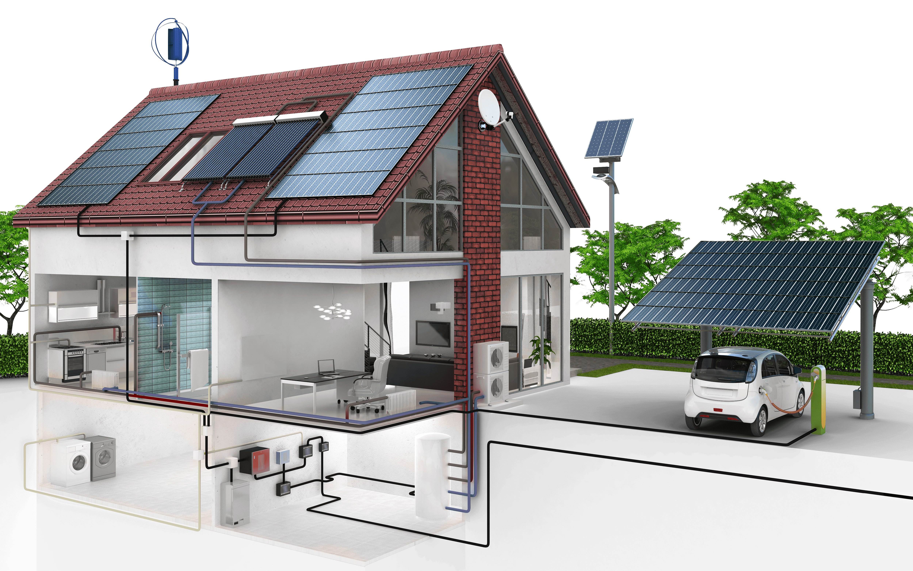
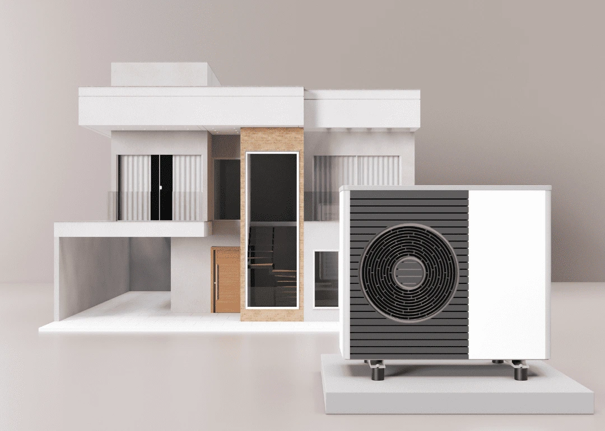

Justine M.
Projet maison neuve : pompe à chaleur et sol chauffant/réfrigérant.
Disponible et consciencieux, Geoffrey a réalisé un chantier impeccable !
Je recommande vivement !
Stephanie G.
Artisan très professionnel, Geoffrey a été très réactif
pour la date de mes travaux et surtout productif !
Matériels de qualité énergétique posés et réception de chantier plus tôt que prévu.
Artisan a recommander les yeux fermés.
Fabien C.
De la prise de contact, au RDV pour le devis jusqu’à l’installation
tout est très professionnel.
Le matériel proposé est de qualité et de fabrication française locale,
les coûts sont placés, le conseil est avisé et les interrogations levées.
Disponible, à l’écoute et soigneux, cet artisan est à recommander sans réserves !
Audrey L.
Société très professionnelle,
suivi et prise en charge du dossier de A à Z,
sérieux dans les délais et dans la réalisation de l'installation -
Installation pompe à chaleur nous concernant. Nous recommandons fortement.
Philippe B.
Contact rapide et de bons conseils.
Travail sérieux (pose d'un chauffe eau thermodynamique)
dans le timing qui me correspondait le mieux.
+ L'équipe est très sympa ce qui est toujours appréciable.
Nicolas D.
Travail impeccable, réalisé dans les délais annoncés et au prix juste.
je recommande vivement cette société.
Pierre G.
Entrepreneur efficace et très compétent,
re recommande sans hésitation
Nina M.
Nous avons fait appel à la société Granjon pour l’installation d’une pompe à chaleur AIRMAT
(pac coaxial 9-200 avec ballon d’eau chaude sanitaire intégré)
et la pose d’un plancher chauffant & rafraîchissant sur Tosse.
Nous sommes très satisfaits de leurs services car ils ont été très réactifs
et rapides pour la pose (et attractifs sur les prix)...
Thierry G.
Je recommande fortement l'entreprise GRANJON .
Un travail impeccable,propre et efficace.
Beaucoup de sérieux et de professionnalisme.(Respect des délais)
Un matériel Landais fabriqué à Castet ,de grande technologie...
Francine G.
Si vous recherchez un professionnel, sérieux, rigoureux, ponctuel...
contacter Granjon énergie !!! De bons conseils et raisonnable en prix,
il vous conseille techniquement et ne cherche pas à tout prix le côté mercantile.
Un travail soigné, laissant un chantier propre avec une équipe très sympathique...
Benoît C.
Conseils d’une grande précision.
Qualité du matériel installé.
Respect des délais et des engagements.
Accompagnement à la prise en main du matériel.
Équipe aussi sérieuse que sympathique.
Josette L.
Nous avons engagé Mr GRANJON pour l'installation d'une PAC
et d'un ballon thermodynamique.
Des le premier rv, nous avons vu en ce professionnel d'abord
un technicien maitrisant parfaitement son sujet.
l'aspect commercial a découlé tout naturellement par la suite...
Naco D.
Un service rapide et efficace !
L’entretien de ma chaudière a été parfaitement réalisé, et les radiateurs ont été soigneusement purgés.
L’équipe a été professionnelle, ponctuelle et très agréable.
Je recommande vivement leurs services pour leur sérieux et leur expertise.
Merci encore pour cette prestation !
Philippe R.
Très satisfait du travail réalisé par M. Granjon concernant la pose d'une climatisation réversible.
Accompagnement très professionnel et explications techniques compréhensibles.
Délais respectés. Je recommande vivement cette entreprise.
Liliane C.
Je recommande Mr Granjon Énergie.
Très sérieux dans son travail, installation d'une climatisation.
Très satisfait de ces prestations et de très bons conseils.
Lili et Serge
Evelyne T.
Rapide efficace et prestation de qualité , merci beaucoup
Jerome C.
Merci pour le travail effectué, équipe professionnelle et sérieuse du début à la réception du chantier.
Je recommande vivement.
Pierre B.
Du très bon travail et très propre.
De bons conseils et à l'écoute du client.
Un entreprise très professionnelle.
Caroline A.
Je recommande la société Granjon pour l installation de ma climatisation.
Travail impeccable ,consciencieux, respecte les delais.
Equipe trés sympathique.
Merci pour votre travail.
Olivier C.
Super pro.
Très bon conseils et installation de qualité.
Little B.
Excellente prestation, un travail efficace et soigné dans le respect de la clientèle.
Dans les délais, l’artisan répond toujours aux sollicitations téléphoniques et ne nous a pas laissé dans l'inconnu.
A conseiller vivement.
Martine L.
Je recommande particulièrement cette entreprise pour son efficacité et son sérieux.
Travail bien fait, propre, par des gens très aimables.
Stéphanie G.
Artisan très professionnel, Geoffrey a été très réactif
pour la date de mes travaux et surtout productif !
Matériels de qualité énergétique posés et réception de
chantier plus tôt que prévu. Artisan a recommander les
yeux fermés.
Nadine A.
Personne que je recommande absolument.
Travail propre et très sérieux . yeux fermés.
Floriane D.
L'entreprise ProSportConcept à fait appel à GRANJON
Energie, nous recommendons à 10 000% ses services.
Accueil, diagnostic, accompagnement, services de qualités !
Sérieux et professionnel !
ProSportConcept, Tyrosse.
Marie D.
Très professionnel.
Explications claires et précise. Très disponible. Superbe travail !
Professionnel compétant je recommande
Estella F.
Je suis très satisfaite de la climatisation
qui a été posée dans des délais défiant toute concurrence!
Réactif et travail professionnel.